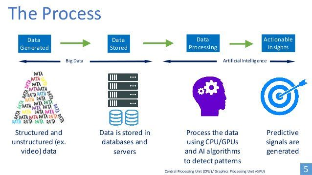

How does AI work ?
First wave: Symbolic artificial intelligence
Expert systems
In these systems, a human expert creates precise rules that a computer can follow, step by step, to
decide how to respond to a given situation. The rules are often expressed in an 'if-then-else' format.
Symbolic AI can be said to 'keep the human in the loop' because the decision-making process is
closely aligned to how human experts make decisions. Indeed, any intelligence in the system comes
directly from the encoding of human expertise. Furthermore, humans can easily understand how
these systems make specific decisions. They can easily identify mistakes or find opportunities to
improve the programme, and update the code in response. These systems have limits. In order to
develop a useful and reliable system that works for complex and dynamic real world problems, you
would need so many rules and exceptions that the system would very quickly become very large
and complicated. They are really at their best in constrained environments that do not change much
over time, where the rules are strict and the variables are unambiguous. For example, they are useful
for helping people to calculate their taxes, based on their income, circumstances and the various
levies, allowances and exceptions that apply to them.
Fuzzy logic: Capturing intuitive expertise
Where each variable is either true or false, the system needs absolute answers. However, these are
not always available. Fuzzy logic allows variables to have a 'truth value' between 0 and 1 so, for
example, patients can be assigned a figure representing the extent to which they might have a
certain illness.
By including many variables and values, fuzzy systems can deal with borderline cases, and are
particularly useful for capturing intuitive knowledge where experts make good decisions in the face
of wide ranging and uncertain variables that interact with each other. They have been used to
develop control systems for cameras that automatically adjust their settings to suit the conditions,
and for stock trading applications to establish rules for buying and selling under different market conditions. These continually assess dozens of variables and follow human-designed rules to adjust
truth values and – on the basis of these – to make and implement decisions.
Good old-fashioned artificial intelligence
Symbolic AI systems require human experts to encode their knowledge in a way the computer can
understand. This places significant constraints on their degree of autonomy. While they can perform
tasks autonomously, they can only do so in the ways in which they are instructed, and they can only
improve by direct human intervention. This makes symbolic AI less effective for complex problems
where not only the variables, but also the rules, change in real time. Unfortunately, these are the
problems with which we need the most help. For example, to really capture how a doctor draws on
their knowledge and expertise to make a decision would require millions of 'if-then-else' rules and,
even then, it might never hope to codify the human doctor's intuitive and emotional intelligence.
Nonetheless, symbolic AI is far from obsolete, and is particularly useful in supporting humans
working on repetitive problems in well-defined domains, from automated machine control for
building management to decision support systems for accountants. Its reliable performance in
these domains earned it the endearing nickname 'good old-fashioned AI'.
Second wave: Data-driven machine learning
Machine learning (ML) refers to algorithms that autonomously improve their performance, without
humans directly encoding their expertise. Usually, ML algorithms improve by training themselves
on data, hence 'data-driven' AI. The major recent advances in this field are not due to major
breakthroughs in the techniques per se but, rather, through massive increases in the availability of
data. In this sense, the tremendous growth of data-driven AI is, itself, data-driven. Usually, ML
algorithms find their own ways of identifying patterns, and apply what they learn to make
statements about data. Different approaches to ML are suited to different tasks and situations, and
have different implications. Some such approaches are explored in the following sections.
Artificial neural networks and deep learning
As the name suggests, artificial neural networks (ANNs) are inspired by the functionality of the
electro-chemical neural networks found in human (and animal) brains. The working of the brain
remains somewhat mysterious, although it has long been known that signals from stimuli are
transmitted and altered as they pass through complex networks of neurons. In an ANN, inputs are
passed through a network, generating outputs that are interpreted as responses.
An ANN schema is set out in figure 1. The process
starts with signals being sent to the 'input layer', and
ends with a response being generated at the 'output
layer'. In between, there is one or more 'hidden layer',
which manipulates the signal as it passes through,so
that it generates a useful output. For example, for an
ANN that can play backgammon, the game situation
– including the dice roll and position of pieces on the
board – would be translated into a set of numbers
which are sent as inputs to the ANN at the input layer.
The, signals then pass to the next layer, so neurons in
this hidden layer receive several numbers. Each
neuron in this layer combines and manipulates these
signals in different ways to generate a single
numerical output. For example, one neuron might
add all of the inputs and output 1 if the total is over 50, or 0 if it is not. Another neuron might assign
weights to different input signals, multiply each input signal by its weight, and add the results to
give as its output. The outputs of these neurons then pass as signals to the next layer. When the
signals reach the final layer and its own output is generated, the process is complete. The final signalcan be interpreted, in the case of the backgammon game, as instructions to move counters on the
game board.
Now we have a simple ANN, inspired by a simplified model of the brain, which can respond to a
specific input with a specific output. It doesn't really know what it is doing, or even the rules of
backgammon. But if we give it a game position, it will always suggest a move. The question is, how
to develop an ANN that can make smart moves and be a good player? First, it needs to have the
right structure. For simple tasks, ANNs can work well with just a dozen neurons in a single hidden
layer. Adding more neurons and layers allow ANNs to tackle more complex problems. Deep learning
refers to the use of big ANNs, featuring at least two hidden layers, each containing many neurons.
These layers allow the ANN to develop more abstract conceptualisations of problems by splitting
them into smaller sub-problems, and to deliver more nuanced responses. It has been suggested that
three hidden layers are enough to solve any kind of problem although, in practice, many ANNs
include millions of neurons organised in dozens of hidden layers. By way of comparison, human
brains contain ~100 billion neurons, cockroach brains ~1 million and snail brains ~10 thousand.
So if the 'deep' part of deep learning is about the complexity of the ANN, what about the 'learning'
part? Once the correct structure of the ANN is in place, it needs to be trained. While in theory this
can be done by hand, it would require a human expert to painstakingly adjust neurons to reflect
their own expertise of how to play a good game. Instead, a ML algorithm is applied to automate the
process. The training process can be an intensive and complicated process, and often never really
ends, as constant updates respond to new data availability and changes in the problem faced. Once
a well-trained ANN is in place, it can be applied to new data very quickly and efficiently.
Training neural networks: Back propagation and gradient descent
If we compare the actual output of an ANN to the desired output as reported in the labelled data,
the difference between the two is described as the error. Back propagation and gradient descent
improve the ANN's performance by using calculus to gradually minimise this error. Back
propagation deals with adjusting the neurons in the ANN. The process starts with an input signal
passing through the ANN and generating an output signal. This is compared to what it should have
been – according to the labelled data – to calculate the error. Now, calculus is used to generate an
error signal which passes backwards through the ANN, making changes to neurons so that it gives
an output with a lower error. It starts with the output layer, which has a stronger impact on the result,
and then moves back through the hidden layer(s) to make deeper changes. In this sense, back
propagation takes the error and propagates it backwards through the ANN.
In theory, it is possible to calculate the error for every
possible ANN and then choose the best one but, in
practice, there are too many possible configurations
for this to be feasible. A smarter approach is required.
Gradient descent is often compared to a hiker that
needs to find their way down a mountain, but they can
only see one metre in each direction, so they adopt a
strategy of looking around, deciding which direction
offers the steepest descent, moving in that direction,
and then looking around again and repeating the
process until they find their way down the mountain.
Similarly, an ANN can be generated, starting at a
random point on the error landscape depicted in
figure 2. Through back propagation, its error is
calculated and a few different kinds of small changes
are tested and evaluated. The option that offers the best improvement is assumed to be the best
direction, so the changes are implemented and then the process is repeated with a new set of tests.
Just as the hiker takes the steepest possible step down the mountain, the ANN makes gradualimprovements until it 'converges' on the best possible solution, known as the 'global optimum'. Of
course, the approach is not perfect. Just as the unfortunate hiker can getstuck in a hole near the top
of the mountain, where moving a metre in any direction would make them ascend, the algorithm
can settle for a 'local optimum' which is not the best solution, but every small change makes it worse.
This is why, in practice, the whole exercise is repeated many times, with different starting ANNs and
a lot of training data.
Inspired by nature: Evolutionary training methods
While gradient descent and back propagation are based upon mathematical concepts such as
calculus, here we will explore methods inspired by evolutionary concepts such as survival of the
fittest, reproduction and mutation. There are many approaches within this family, but the broad
principle remains the same. A population of ANNs is created. They compete against each other and
are subjected to artificial selection – the AI equivalent of natural selection – so that those that
perform badly are filtered out, while those that perform well survive to the next generation. To
replenish the population, new ANNs are generated through AI's answer to mating, combining parts
of parent ANNs while applying a dose of random mutation.
Training an ANN to play backgammon, a population of ANN 'players' is generated with random
neurons. They are made to play against each other, taking turns to respond to inputs describing the
board and the dice roll. Given their random constitution, this first generation of players will not be
very good at the game, but some will be 'less bad' and win more games. The worst players are
deleted and better players survive, with their features combined and mutated to produce a new
generation of ANNs which join them in the next round of games. Some child ANNs will play better
than their parents, others worse, but the environment is conducive to steady improvement.
The interesting thing about evolutionary methods is that they yield results without any strategic
hints, without data to study, without even being told the rules. This means ANNs can develop
interesting ways of playing, including strategies that humans might never have considered and may
have trouble appreciating. An ANN's move can be explained as mathematically determined by its
structure. This can, in turn, be explained as mathematically determined by the evolutionary
environment. However, the implicit conceptualisation of the problem or logic of its solution is very
difficult to explain, even for the engineers that design them. In this sense, the ANN's decisionmaking process is not transparent.
Evolutionary techniques can be applied to other problems, such as optimising computer programs
or transport schedules. There are also other interesting AI approaches inspired by biological and
behavioural mechanisms. For example, ant colony optimisation is modelled on how ants use
pheromones as signals to find and highlight the quickest route between two locations, and can be
used to optimise vehicle navigation and telecommunication networks. Hunting search is a search
and optimisation technique based upon the pack hunting behaviour of lions, wolves and dolphins.
'Swarm intelligence' techniques inspired by the honey bee's dance (among other apian behaviours)
have been applied in modelling and optimisation tasks in many engineering disciplines.
All about data: Data mining, big data and data in the wild
Since data is so central to contemporary AI development, several data-related concepts are
frequently raised during debates about AI. AI engineers spend as much time thinking about data as
algorithms. They need lots of good quality data to perform effective ML, and even more to test the
results. 'Data mining', is a field of computation focused on the automated identification of patterns
and anomalies in datasets. The dataset could be anything from text posted on social media to
precise measurements of underground geological formations, and the mining process could deploy
ANNs, statistics and modelling to identify useful features. 'Big data' refers to datasets that are so
large and complex – including content from different sources, in different formats, and with
different degrees of authenticity and accuracy – that they cannot be stored or processed in the same
way as smaller datasets. This brings us to 'data in the wild', which usually refers to data that wasproduced for one purpose but remains somehow accessible and can be used for other purposes,
perhaps outside the control of its original producer. So a research project might apply data mining
techniques to social media platforms and blogs to research different individual's emotional and
behavioural responses to news stories. Since this 'data in the wild' was not intended for research
purposes, its use might be unreliable, unethical, or even illegal. The art of artificial intelligence
It might be tempting to think of ML as doing all the hard
work, but the algorithm can only follow the precise
instructions set out by the AI engineer. First, the engineer
needs to find a good way of encoding the problem itself.
For the backgammon playing ANN, the engineer needs to
express the game board and dice as a signal to be sent to
the input layer. They also need to find a way of interpreting
the output as a legitimate move – an instruction about which counters to move, and where to move
them. They also need to work out a strategy for dealing with illegitimate moves, e.g. by designing
the output layer so that its signal can always be interpreted as a legitimate move.
If the ML algorithm uses training data, the AI engineer must consider which data to use and how.
Where 'data in the wild' is used, they must ensure that it is legal and ethical. Even inadvertent storage
and processing of some content – such as terrorist propaganda and child pornography – can be
illegal. Other data might be subject to copyright, or require 'informed consent' from the owner
before it is used for research or other purposes. If the data passes these tests, the engineer must
determine whether it is sufficiently large and representative for the problem at hand. A dataset for
learning to recognise cats should contain lots of pictures from different angles, different colours and
breeds. Finally, they need to decide how much to use for training, and how much to set aside for
testing. Where the training dataset is too small, the ANNs effectively memorise it without learning
general rules and perform poorly when tested with new data.
The AI engineer also needs to make several important decisions about the structure of the ANN and
the ML algorithm. With too few neurons and layers, the ANN will not be able to deal with the
problem. Too many and they tend to memorise the training data instead of learning general rules.
For gradient descent, the engineer defines how many evaluations to do before deciding on a
direction to travel, as well as how far to travel in the chosen direction before re-evaluating. This is
known as the 'learning rate'. If it is slower, it is as though the hiker takes their time to make better
choices, if it is faster, it is as though the hiker thinks less and walks more. There is no right answer,
and the engineer must decide how to balance speed against accuracy.
In evolutionary approaches, the AI engineer has to decide the population size and number of games
played, balancing thorough appraisal against processing burden. They also need to decide how
many ANNs to replace per generation, and how to replace them by combining and mutating
elements of the parent ANNs. Mutation adds new 'genetic material' to the population, which is
important for the emergence of new solutions, but if it is too drastic then the offspring might be so
different from their parents that they perform as badly as the randomly generated ANNs from the
first generation of the process.
A further question is raised in understanding when an optimum solution has been found. As
discussed in the context of gradient descent, an algorithm can get stuck in a 'local optimum', which
is the best solution they manage to find, but not the best possible solution available. Similarly,
evolutionary populations can develop into a local optimum, whereby the parents cannot produce
offspring that perform better than them, even though there are better solutions available. The
engineer can counteract local optima by adjusting the learning rate in gradient descent, or altering
the approach to reproduction and mutation in evolutionary methods – introducing more genetic
material. They can also repeat the training process several times with different starting points and data sets. It is often worth the effort because, while ANNs are difficult to train, once a good solution
is found they can be applied to new data very quickly.
Many of these decisions require the AI engineer to balance the constraints of the problem at hand,
its context, and the data and processing resources available to them. There are no objectively correct
formula, so they are part of the 'craft' of AI, with practitioners relying upon intuition, experience and
shared wisdom to make effective decisions. Perhaps unsurprisingly, some AI engineers use ML to
decide on some of these key variables. For example, 'neuroevolution' enables the ML algorithm to
change the structure of the ANN, so mutation could alter the number of neurons and layers within
the ANN or the population size. Nonetheless, the AI engineer still needs to make difficult decisions
and give precise instructions about when and how much the ML can adjust each variable. These
trends further reduce the AI engineers' direct influence upon how ANNs respond to problems, and
might make it even more difficult for humans to make sense of the solutions they find. Nonetheless,
the engineer retains an irreplaceable role in the design and optimisation of the environment in
which machines learn.